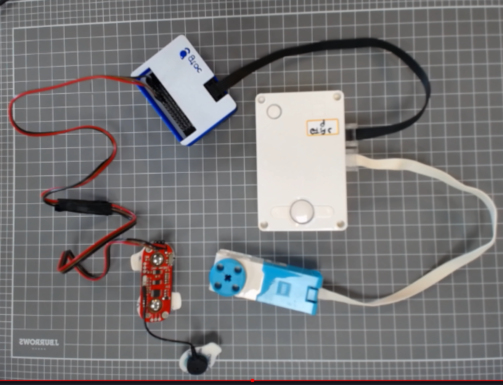
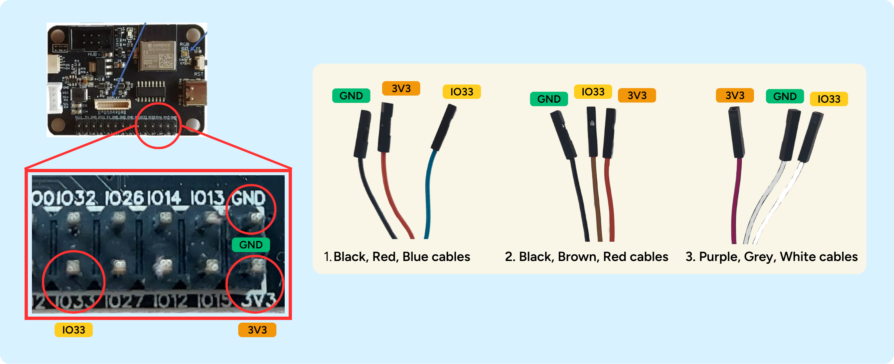
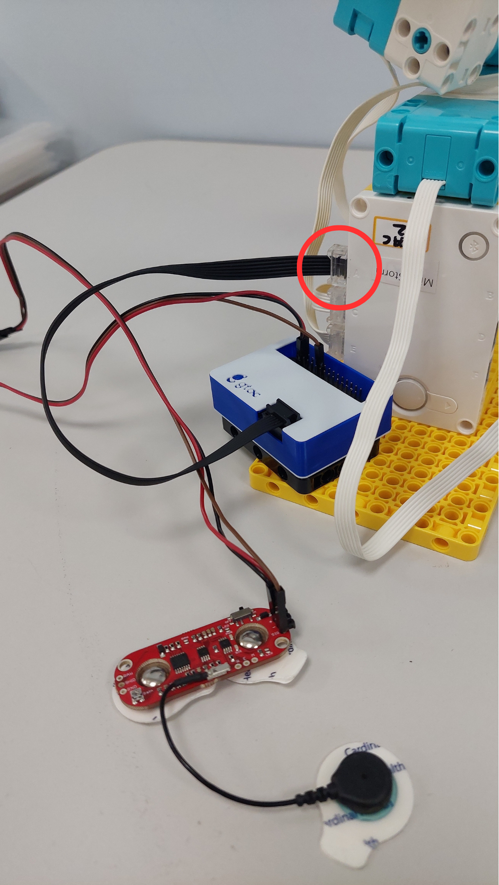
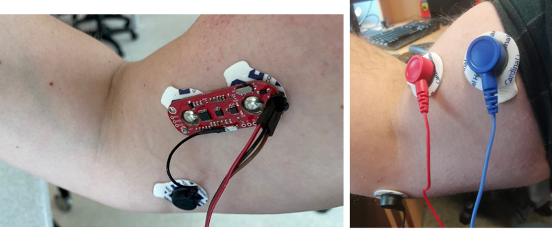
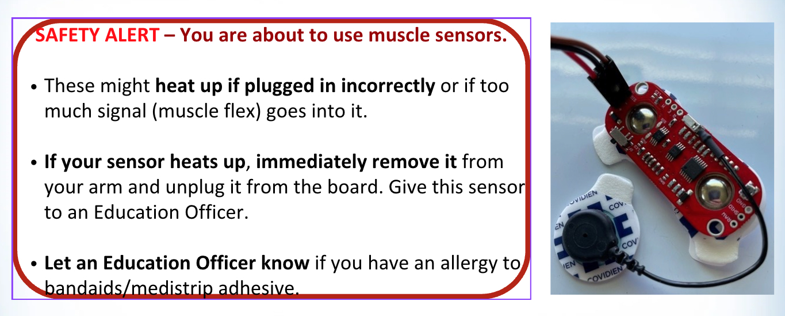

In this activity you’ll connect a muscle sensor to control your motors, then upload a code & test it. Use the buttons below to move through each step.

In this section, you will get a muscle sensor to connect with your robotic arm. Watch this short video to learn about the components you will get with the muscle sensor. The "The Myosensor" button below takes you to a PDF document that explains the muscle sensor equipment in more detail.

In this step, we will be connecting the sensor cables to the board. Each board will have many different pins. We will be connecting the cables to the VCC, GND, IO33 pins. Look at the picture above to learn how to connect the cables to the right pin.
Watch this video to learn how to connect the sensor cables in more detail.

Connect your myosensor's black cable to the Lego Hub.
The black cable from the myosensor box needs to connect to PORT A.
Look at the picture above to see where to plug in your myosensor.
We will be using the Lego Mindstorms app to control your robotic arm. Make sure you have the Lego Mindstorms app downloaded using the "Download app" button below. You will also need to download the right code. Click on the "Download code" button to download the code you'll need for this exercise.
Once you have downloaded the app and code, watch this video to learn how to select the right project.


One you have the sensor attached, upload your code.
Follow the instructions to upload the myosensor code to your robot.